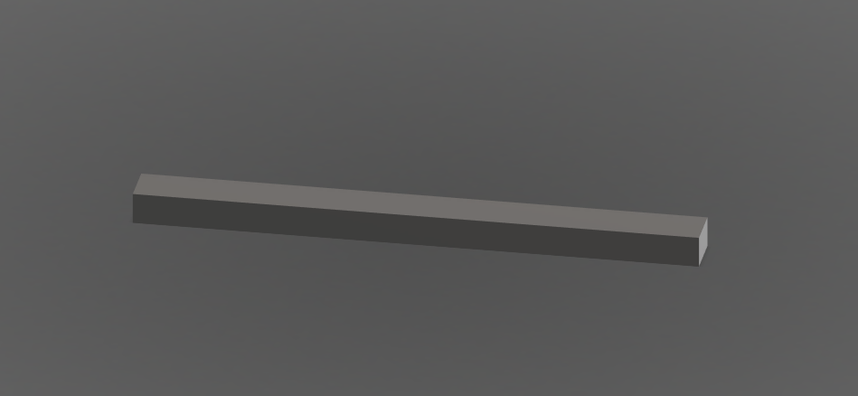

My initial idea and sketch were inspired by installations done by artists and architects such as Santiago Calatrava.
I started off by creating one slat and patterning it 9 more times 90 degrees both horizontally and vertically, increasing the length of each slat.
I then created the circular base from my sketches. I realized two problems, however. One, the first slat was lying flat against the base, and two, the slats were all floating. I fixed that by removing the first slat and grounding all of the slats to the base.
The circular base was a little boring, however, so I swapped it for a triangular one, which I think fits the mood of the piece a bit better.
I was satisfied with the model, so I brought it into blender to add materials and lighting. Since this was supposed to be a fountain, I added some water as well.